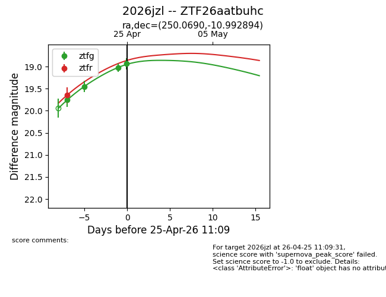
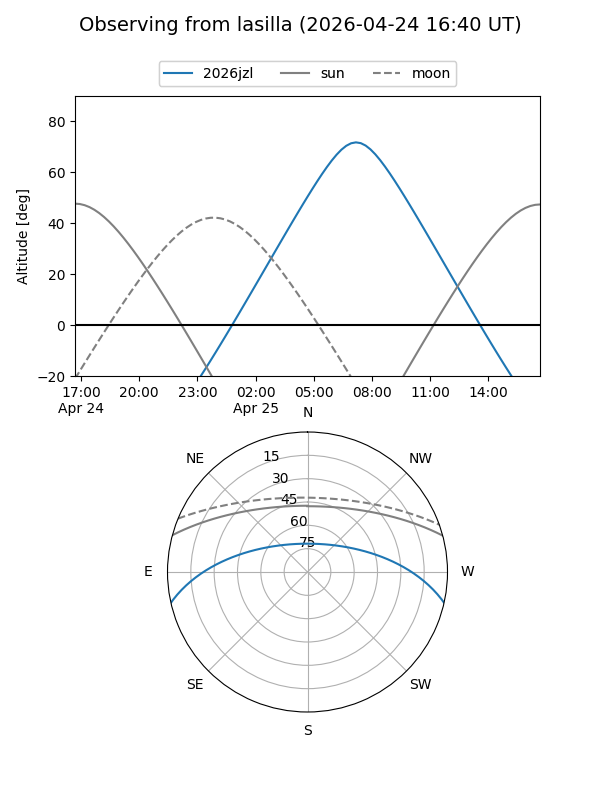
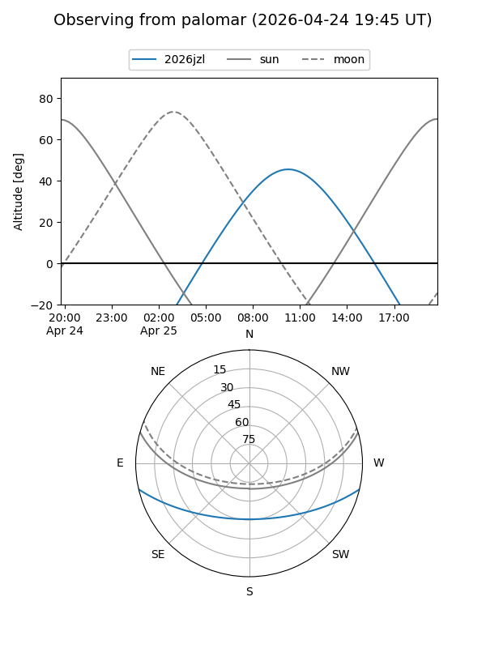
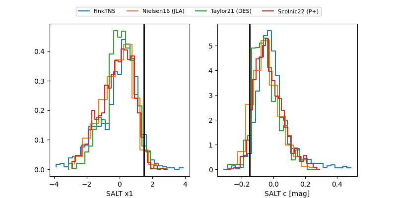

2026jzl
Target 2026jzl at 2026-04-25 11:10
Aliases and brokers:
FINK: link
Lasair: link
ALeRCE: link
TNS: link
YSE: link
alt names
ZTF26aatbuhc (ztf,fink_ztf)
2026jzl (tns,yse)
Coordinates:
equatorial (ra, dec) = 250.0690,-10.99289
equatorial (HMS+DMS) = 16:40:16.56,-10:59:34.42
galactic (l, b) = (6.3942,+22.71795)
Flags:
Photometry:
last ztfg=18.94, ztfr=19.65
4 ztfg, 1 ztfr detections
Lightcurve

Visibility


Additional plots
